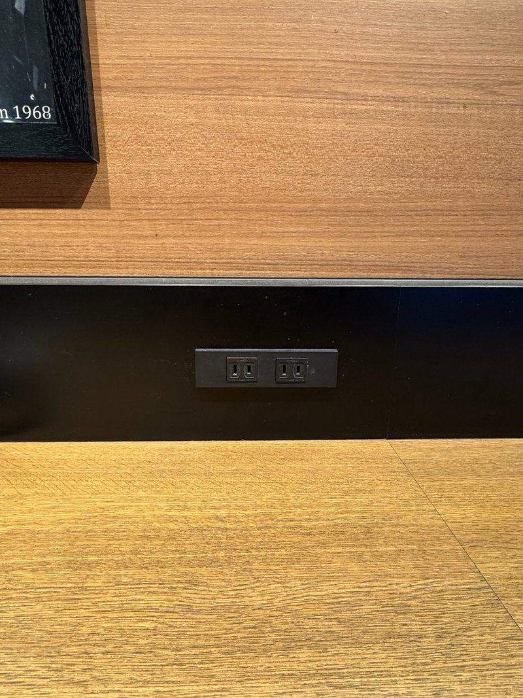
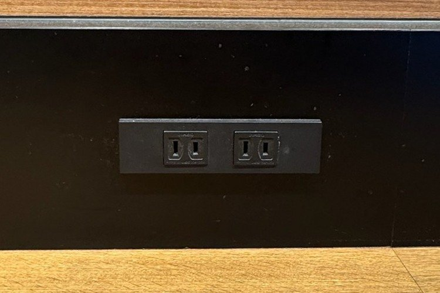
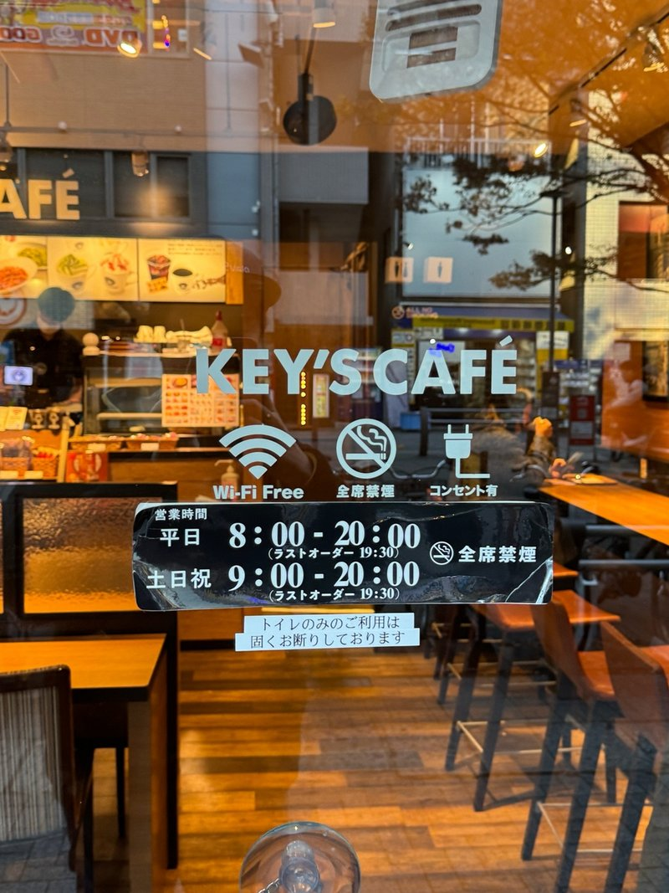
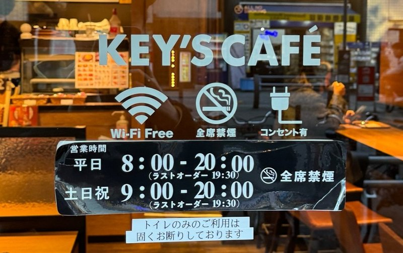
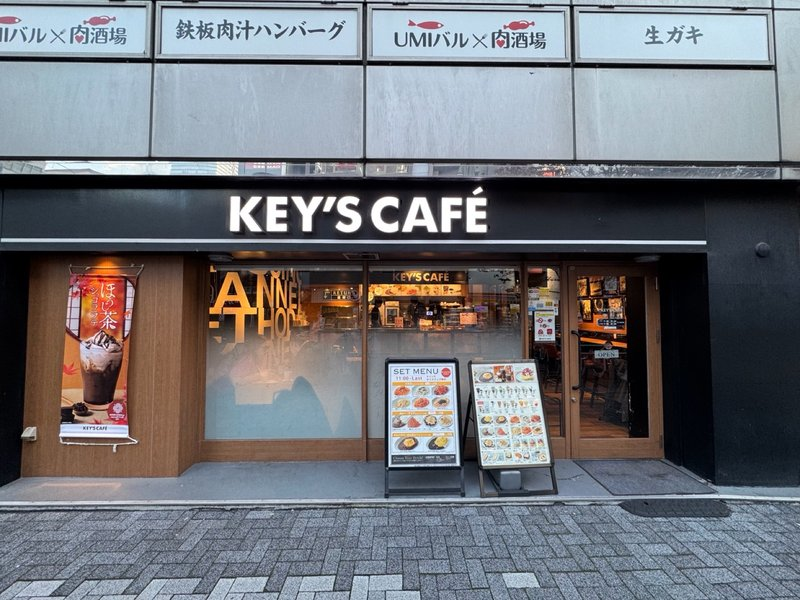
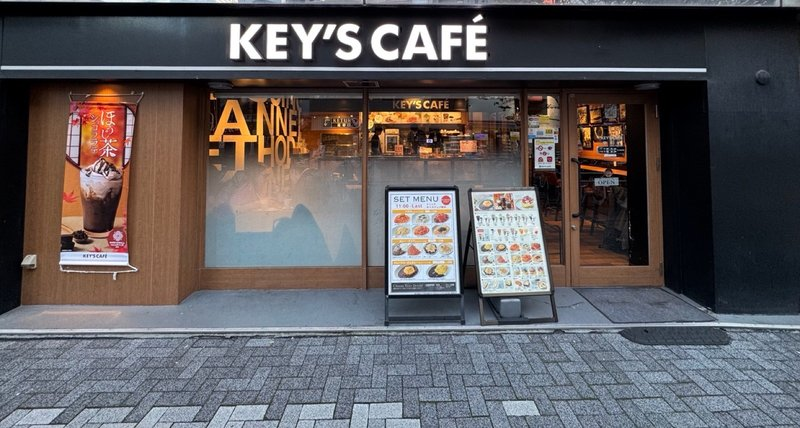
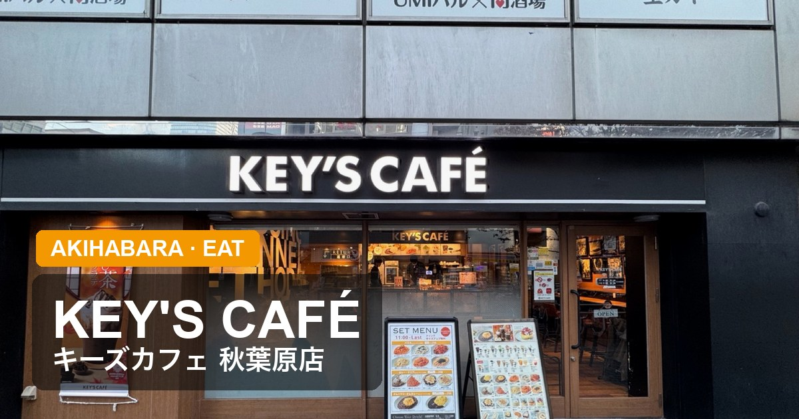
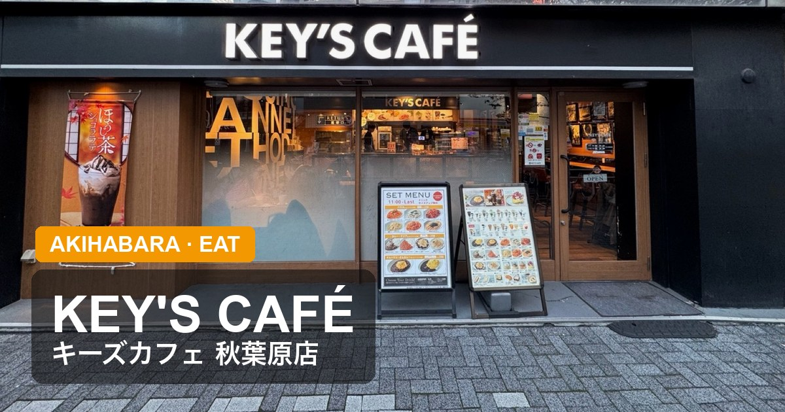

BEFORE

記事（KEY'S CAFÉ Akihabara）の写真のうち、壁・天井・テーブルなど「何もない面」が大きく写って被写体が小さくなっていたものを、被写体が主役になるようズーム切り抜きした。左が元、右が修正後。価格・営業時間など記事の根拠になる文字は切り落としていない。問題のなかった写真（店内・Wi-Fi POP・メニュー看板・SET MENU・入口）は触っていない。


今回の指摘の中心。上半分が木目の壁、下がテーブル面で、肝心のコンセントが中央に小さく写っていた。コンセントプレートを中心に寄せ、黒帯の範囲で切り抜いた。


ロゴ＋アイコン＋営業時間シールの帯に寄せた。営業時間（平日8:00–20:00／土日祝9:00–20:00、ラストオーダー19:30）と下の注意書きまで全部残っている。


上部に他店の看板とグレーの壁面パネルが写っていたので、KEY'S CAFÉ のファサードから下に絞った。店頭が画面いっぱいになった。


OGも同じ外観写真が元で、上部の壁面が入っていた。新しいヒーロー写真から同じ様式（オレンジチップ＋店名EN/JP）で作り直した。